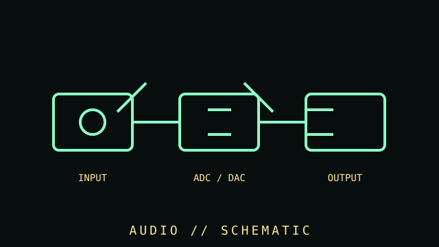

[ SUBCATEGORY DIRECTORY // 9 FILES // 82 PART RECORDS ]
Browse sound subcategories
Open a static subcategory file to browse individual models, their compatibility and preservation notes, local diagrams, and product-specific sources.
Legacy ISA audio cards.
OPEN SUBCATEGORY FILE →SUBCATEGORY FILE // 13 PART RECORDSPCI sound cardsConventional PCI audio cards.
OPEN SUBCATEGORY FILE →SUBCATEGORY FILE // 11 PART RECORDSPCI Express sound cardsPCI Express add-in sound cards.
OPEN SUBCATEGORY FILE →SUBCATEGORY FILE // 22 PART RECORDSUSB audio interfacesUSB recording and production interfaces.
OPEN SUBCATEGORY FILE →SUBCATEGORY FILE // 06 PART RECORDSOnboard audio codecsMotherboard audio codec ICs.
OPEN SUBCATEGORY FILE →SUBCATEGORY FILE // 02 PART RECORDSUSB audio adaptersCompact USB audio adapters.
OPEN SUBCATEGORY FILE →SUBCATEGORY FILE // 09 PART RECORDSDAC convertersUSB DAC products and converter ICs.
OPEN SUBCATEGORY FILE →SUBCATEGORY FILE // 05 PART RECORDSMIDI interfacesDedicated computer MIDI interface hardware.
OPEN SUBCATEGORY FILE →SUBCATEGORY FILE // 04 PART RECORDSThunderbolt audio interfacesComputer audio interfaces with Thunderbolt connectivity.
OPEN SUBCATEGORY FILE →[ COMPONENT RECORD // AUDIO PATH ]
Sound
hardware.
Computer audio can be provided by onboard codecs, discrete sound cards, USB audio devices, professional interfaces, or external DACs. The entire analog/digital signal path affects compatibility and noise.

CLASS RECORD: consumer and production audio interfaces. Marketing terms such as "surround," "studio," or "hi-res" do not replace full codec, I/O, and driver specifications.
Reference specifications
| Digital conversion | DAC converts digital samples to analog output; ADC converts analog input. Sample rate, bit depth, channel count, filters, noise, and distortion are device-specific. |
|---|---|
| Interfaces | Analog 3.5 mm/RCA/TRS/XLR, S/PDIF optical/coaxial, HDMI audio, USB, and PCIe are common. Physical connector shape does not establish signal type. |
| Features | Microphone preamps, phantom power, hardware mixing, MIDI, DSP effects, headphone amplification, and multichannel routing vary by product. |
| Software | Driver model (class-compliant, ASIO, WASAPI, ALSA, etc.), latency, supported OS, firmware, and application support should be recorded. |
Setup & diagnosis
- Identify input/output connectors, balanced/unbalanced wiring, line/mic/instrument levels, impedance, and phantom-power requirements.
- Never connect phantom power to equipment not designed to tolerate it. Follow the interface and microphone manuals.
- Check sample-rate agreement, clock source, operating-system routing, buffer size, and driver version when diagnosing dropouts.
- Ground loops, poor shielding, overloaded inputs, and incorrect gain staging can sound like defective hardware.
- Catalog codecs, DAC/ADC ICs, headphone amplifiers, firmware, driver versions, and measured tests separately from subjective impressions.
Sources & further reading
- Analog Devices — Audio and data-conversion articlesPrimary semiconductor manufacturer technical articles on ADC/DAC behavior.
- USB-IF — USB specifications and class documentsStandards and document library for USB audio devices.
- ALSA Project — Linux audio documentationOpen-source technical documentation for supported audio devices and drivers.